library(tidyverse)
df_url="https://raw.githubusercontent.com/jmayberr/math133-stat-learning-fall2026/refs/heads/main/Datasets/election2016.csv"
election2016=read.csv(df_url)
cb_palette <- c(
"#000000", # black
"#E69F00", # orange
"#56B4E9", # sky blue
"#009E73", # bluish green
"#F0E442", # yellow
"#0072B2", # blue
"#D55E00", # vermillion
"#CC79A7" # reddish purple
)Module 5.2: K-Means Clustering
What is clustering?
Last time we discussed the fact that one of the key issues in principal component analysis is deciding on boundaries between groups of similar points. Using the principal axes as splits creates odd situations where observations that are very close together end up in different groups. Clustering methods get around this issue by developing an algorithm for combining points into “clusters” based on similarity. There are two primary sub-types of clustering algorithms
- K-Means clustering in which you decide in advance how many clusters you would like to use (the “K”)
- Hierarchical clustering in which you let the computer decide.
To illustrate the concepts behind both, we are going to use a toy data set consisting of the following nine points
toy_df=data.frame(x=c(2,1,3,2,1,3,-2,-1,-3),y=c(0,1,2,-1,-2,-3,0,1,2))
ggplot(toy_df,aes(x=x,y=y))+geom_point(shape=1)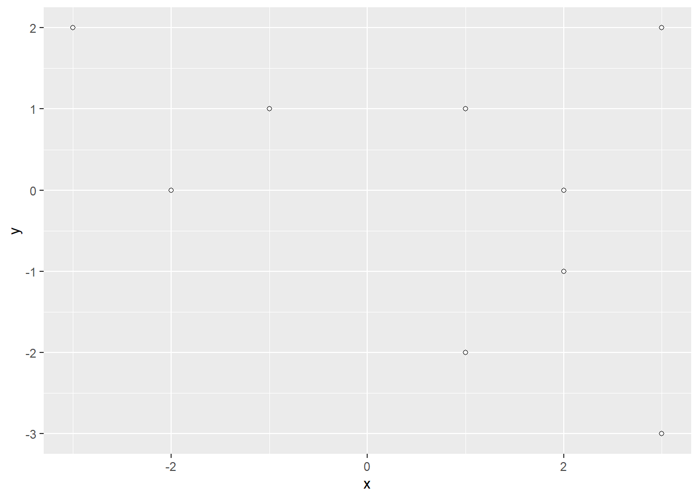
We’ll focus on K-means clustering in these notes and hierarchical in the next.
K-means Toy-Example
For K-means clustering, our first step is to decide upon \(K\), the number of clusters we would like to generate. We’ll come back to that question later, but for now let’s choose \(K=3\) because it kind of looks like the points are clustered in three triangles. The algorithm for K-means is as follows
- Randomly assign the points into \(K\) clusters of roughly equal size.
- Compute the mean (“center”) of each cluster1.
- Compute the distance between the data points and each possible center.
- Assign each data point to the cluster with the closest center.
- Repeat this procedure until the clusters assignments don’t change.
We’ll show the calculations for one time through this cycle and then rely on built in R functions to actually carry it out. We start with the random assignment of points to clusters A,B,C:
set.seed(1)
toy_df$Cluster0=sample(rep(c("A","B","C"),3))
print(toy_df) x y Cluster0
1 2 0 C
2 1 1 A
3 3 2 A
4 2 -1 A
5 1 -2 B
6 3 -3 C
7 -2 0 C
8 -1 1 B
9 -3 2 BThen we compute the means of each cluster. The group_by and summarize functions from tidyverse are helpful for this:
means=toy_df %>%
group_by(Cluster0) %>%
summarize(Xmean=mean(x),Ymean=mean(y)) %>%
as.data.frame()
means Cluster0 Xmean Ymean
1 A 2 0.6666667
2 B -1 0.3333333
3 C 1 -1.0000000Then we compute the distance from each point to each cluster center (using Euclidean/\(\ell_2\) distance):
clusters = c("A", "B", "C")
for (cl in clusters) {
x0 = means$Xmean[means$Cluster0 == cl]
y0 = means$Ymean[means$Cluster0 == cl]
toy_df[[paste0(cl, "Dist")]] =
sqrt((toy_df$x - x0)^2 + (toy_df$y - y0)^2)
}Now look at the top of the resulting dataset
head(toy_df) x y Cluster0 ADist BDist CDist
1 2 0 C 0.6666667 3.018462 1.414214
2 1 1 A 1.0540926 2.108185 2.000000
3 3 2 A 1.6666667 4.333333 3.605551
4 2 -1 A 1.6666667 3.282953 1.000000
5 1 -2 B 2.8480012 3.073181 1.000000
6 3 -3 C 3.8005848 5.206833 2.828427The first data point is closest to the A mean so we switch that point to Cluster A for the next round. We proceed to move all the the other points based on their closest center:
toy_df=mutate(toy_df,Cluster1=
ifelse(ADist<BDist&ADist<CDist,"A",
ifelse(BDist<CDist,"B",
"C")))
toy_df x y Cluster0 ADist BDist CDist Cluster1
1 2 0 C 0.6666667 3.0184617 1.414214 A
2 1 1 A 1.0540926 2.1081851 2.000000 A
3 3 2 A 1.6666667 4.3333333 3.605551 A
4 2 -1 A 1.6666667 3.2829526 1.000000 C
5 1 -2 B 2.8480012 3.0731815 1.000000 C
6 3 -3 C 3.8005848 5.2068331 2.828427 C
7 -2 0 C 4.0551750 1.0540926 3.162278 B
8 -1 1 B 3.0184617 0.6666667 2.828427 B
9 -3 2 B 5.1747249 2.6034166 5.000000 BWe then repeat by computing the Cluster 1 means and reassigning observations to new clusters, continuing until the clusters don’t change anymore.
Here is how to implement this whole algorithm in R using the kmeans command. The “centers” input specifies the value of \(K\) (in this case 3):
k3clusters=kmeans(toy_df[,1:2],centers=3)The output of this command contains several variables. First, there are the assignment of points into clusters
k3clusters$cluster[1] 2 2 2 1 1 1 3 3 3In our example, this vector tells us which cluster it assigned to each point. We can store these in our dataframe and use them to color points in our plot
toy_df$Cluster3Final=k3clusters$cluster
ggplot(toy_df,aes(x=x,y=y,color=as.factor(Cluster3Final)))+geom_point()+scale_color_manual(values=cb_palette[2:4],name="Cluster")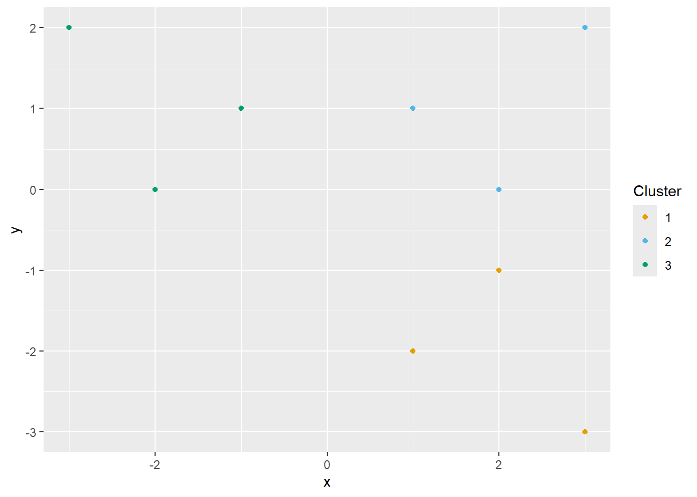
This passes the visual test. We have the points split into three distinct regions!
Real dataset example
Last class, we struggled to determine the optimal way of splitting up states in our PCA plot. We could apply clustering in two ways:
- To the full set of eight variables.
- To the reduced set of first two principal component scores.
Let’s start with the second because it is easier to visualize. We’ll try using \(K=5\) clusters because there are typically five geographic regions in the US (not that the clusters will necessarily give us these):
pcs=prcomp(election2016[,2:9],scale=TRUE)
electionPC=cbind(election2016,pcs$x[,1:2])
state_groups=kmeans(electionPC[,c("PC1","PC2")],centers = 5)
electionPC$Cluster5=state_groups$cluster
electionPC |>
ggplot(aes(x=PC1,y=PC2,label=state,color=as.factor(Cluster5)))+
geom_point(shape=1)+
geom_text()+
scale_color_manual(values=cb_palette[c(1:5)],name="Cluster")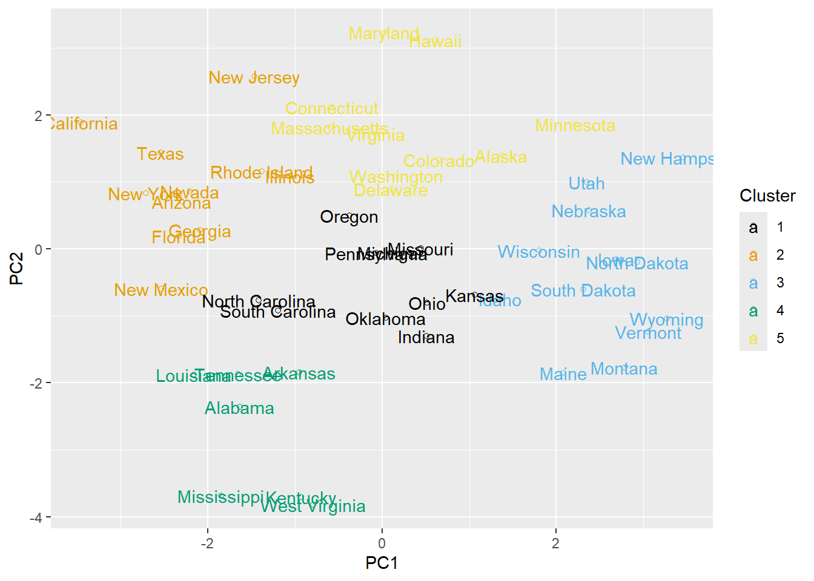
Visually, this doesn’t look too bad (although it doesn’t appear that the clustering has much to do with geography). Let’s run it again, but with a different starting seed
set.seed(2)
state_groups=kmeans(electionPC[,c("PC1","PC2")],centers = 5)
electionPC$Cluster5=state_groups$cluster
electionPC |>
ggplot(aes(x=PC1,y=PC2,label=state,color=as.factor(Cluster5)))+
geom_point(shape=1)+
geom_text()+
scale_color_manual(values=cb_palette[c(1:5)],name="Cluster")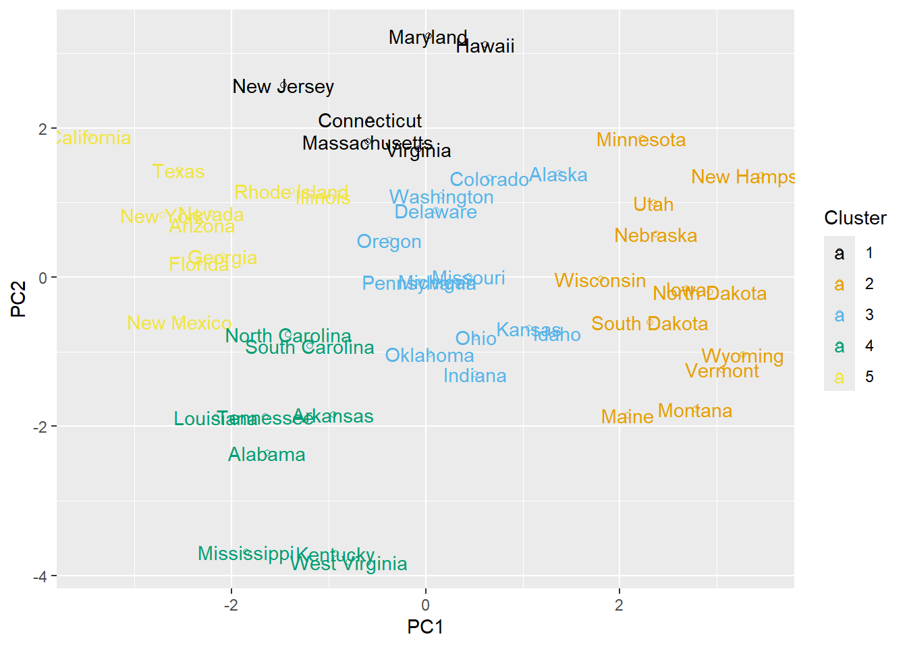
WTF? CO, WA, DE, and AL totally flipped groups! This represents one issue with K-means: because it relies on a random assignment of initial clusters, you are not always guaranteed to converge to the same cluster assignments (only a “local min”) so points close to the boundary may be hard to classify.
One fix for this issue is to have k-means run multiple different cluster assignments and chooses the “best2” one. This increases your chances of finding a global minimum. In the example below, we choose 100 different random starting configurations (nstart = 100):
set.seed(1)
state_groups=kmeans(electionPC[,c("PC1","PC2")],centers = 5,nstart=100)
electionPC$Cluster5=state_groups$cluster
electionPC |>
ggplot(aes(x=PC1,y=PC2,label=state,color=as.factor(Cluster5)))+
geom_point(shape=1)+
geom_text()+
scale_color_manual(values=cb_palette[c(1:5)],name="Cluster")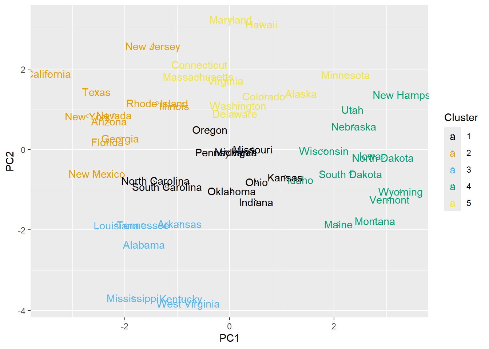
Choosing the number of clusters
A second issue with K-means is choosing the number of clusters. As we increase K, we essentially increase the number of parameters in our model (the number of independent cluster means) and hence, we increase the model flexibility. As such, we get the usual reduction in bias/increase in variance tradeoff.
One important output of kmeans that can be helpful in this scenario is the within cluster sums of squared errors (WSS) which measures the similarity between points within each cluster. It is calculated by the formula \[ \sum_{j=1}^K \sum_{i=1}^{n_j} (x_{ij} - \bar{x}_j)^2 \] where \(\bar{x}_j\) is the mean for cluster \(j\) and \(n_j\) is the number of observations in Cluster \(j\). We can obtain this output with the command
state_groups$tot.withinss[1] 55.54323This is the clustering equivalent of SSE. Why? \(\bar{x}_j\) is kind of like the “predicted” value of a point \(x_{ij}\) in cluster \(j\) similar to how \(\hat{y}_j\) is the predicted value of \(y_j\) in typical regression models. The equivalent of RMSE would be
sqrt(state_groups$tot.withinss/nrow(toy_df))[1] 2.484244While lower is always “better” in one sense and we can always decrease the WSS by adding more clusters, remember the bias-variance tradeoff. We want to decide on the best intermediate value of K. One common method for doing this is to create a plot of WSS vs. K and pick a value of K for which we get diminishing return. Here is some code to do this for the election data, looking at values of K from 1 to 10:
set.seed(1)
fitsSS=data.frame(K=1:10,WSS=NA)
for (i in 1:10){
state_groups=kmeans(electionPC[,c("PC1","PC2")],centers = i,nstart=100)
fitsSS$WSS[i]=state_groups$tot.withinss
}
ggplot(fitsSS,aes(x=K,y=WSS))+
geom_point(shape=1)+
geom_line()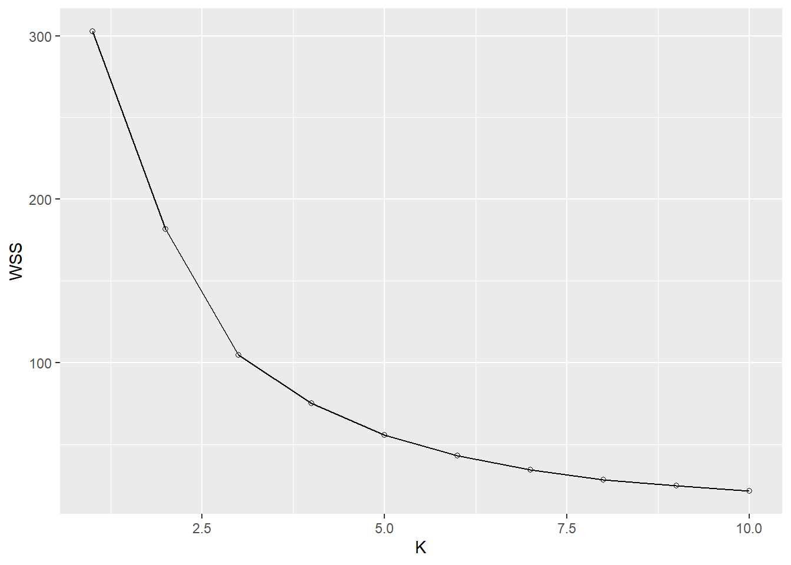
Here it looks like maybe K=3 or 4 is a better choice than K=5 because the rate of change of WSS is starting to flatten off after this point3. Let’s try K=3 and re-graph the states
set.seed(1)
state_groups=kmeans(electionPC[,c("PC1","PC2")],centers = 3,nstart=100)
electionPC$Cluster3=state_groups$cluster
electionPC |>
ggplot(aes(x=PC1,y=PC2,label=state,color=as.factor(Cluster3)))+
geom_point(shape=1)+
geom_text()+
scale_color_manual(values = cb_palette[2:4],name="Cluster")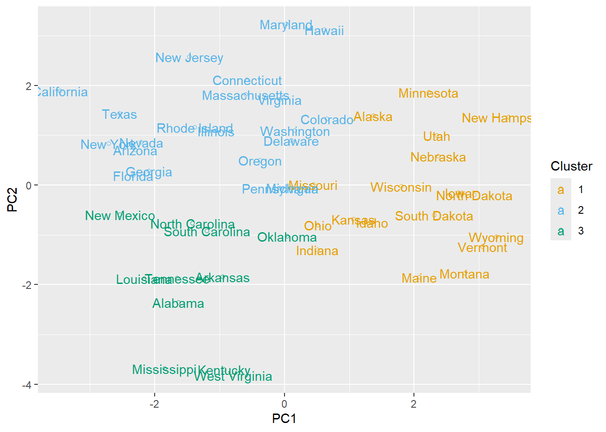
Using more variables
If we don’t care about 2D visualizations, we could bypass the initial PCA step and just perform K-Means on all 8 original variables. We’ll use three clusters for comparison. Note also that we need to scale the variables when we do this so that one doesn’t dominate the distance function by units alone.
state_groups_all=kmeans(scale(election2016[,2:9]),centers = 3,nstart=100)To observe the characteristics of the new clusters, we can view the centers as points in 8D space:
state_groups_all$centers median.income unemployed metro high.school non.citizen white.pov
1 -1.2755064 0.8526916 -0.4282231 -1.1882754 -0.6203446 1.1799401
2 0.3006462 -0.8085395 -0.7671600 0.8741524 -0.6971118 -0.1874980
3 0.4104257 0.2463859 0.8818731 -0.1268436 0.9224669 -0.4573513
income.ineq non.white
1 0.6465003 0.1511954
2 -0.9521887 -0.8211079
3 0.4775187 0.6246092Each row is the center of a different cluster. Its helpful to visualize them with some kind of line, bar, or heat map. We’ll show all three to give you choices (yay). The only complication is that we first have to convert the output of centers to a dataframe and use the pivot_longer function to bring together all of the center values into a new column called “value” with another column called “statistic” that stores the characteristic name:
means =as.data.frame(state_groups_all$centers) %>%
mutate(Cluster=1:3) %>%
pivot_longer(-Cluster,names_to = "statistic",values_to="value")Then we can use ggplot to make visualizations. First the bar chart:
means |>
ggplot(aes(x=statistic,y=value))+
geom_bar(stat="identity")+
facet_grid(.~Cluster)+
theme(axis.text.x=element_text(angle=90,hjust=1))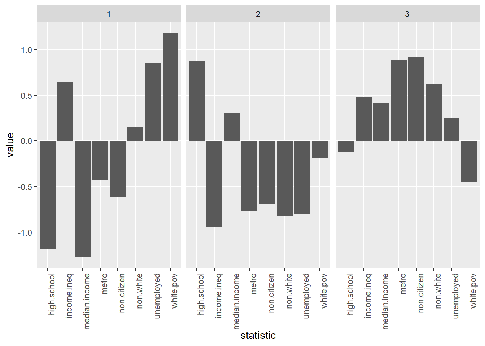
Next, the line chart (also called a profile plot)
means |>
ggplot(aes(x = statistic, y = value, group = Cluster, color = factor(Cluster))) +
geom_line() +
geom_point() +
scale_color_manual(values = cb_palette[2:4],name="Cluster") +
theme(axis.text.x = element_text(angle = 90, hjust = 1))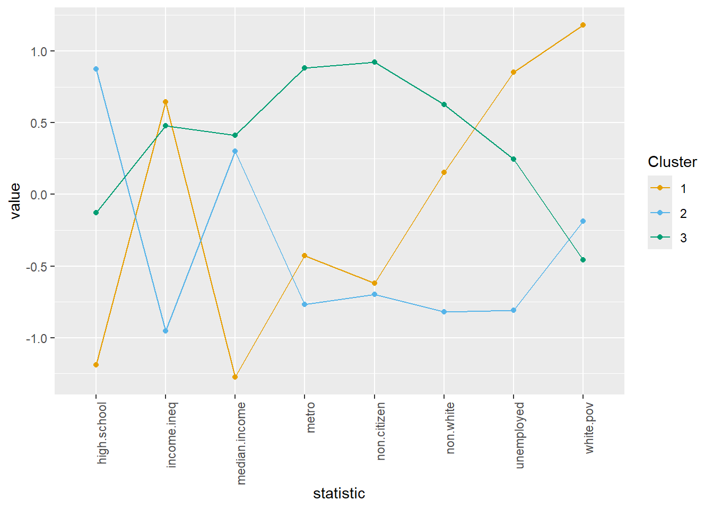
Finally, the heat map:
library(RColorBrewer)
means |>
ggplot(aes(x = statistic, y = factor(Cluster), fill = value)) +
geom_tile() +
scale_fill_distiller(
palette = "RdBu",
direction = -1 # red = high, blue = low
) +
theme_minimal() +
theme(axis.text.x = element_text(angle = 90, hjust = 1)) +
labs(y = "Cluster", x = NULL)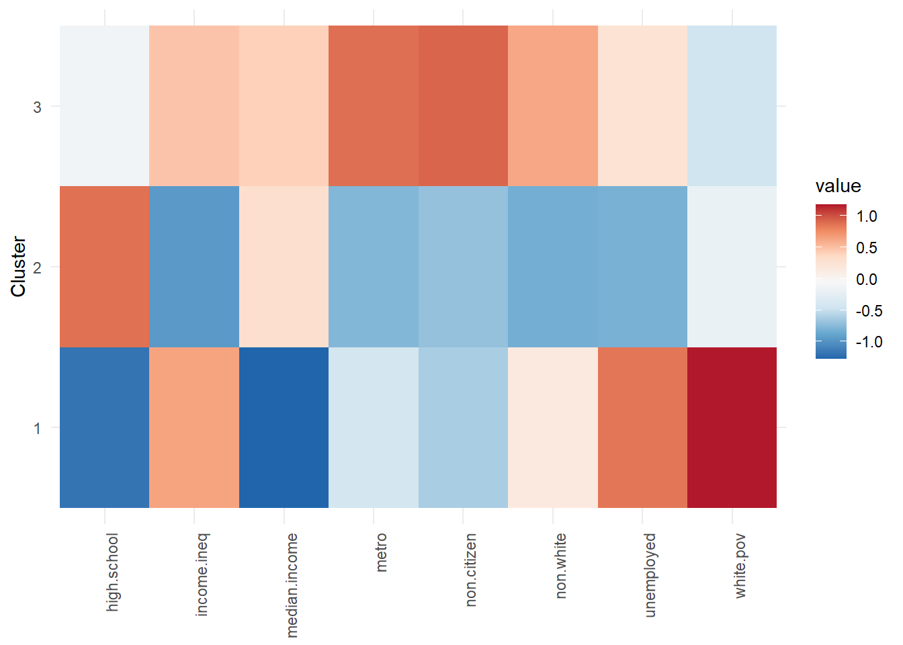
Pick your favorite to look at while reading the following interpretations.
States in the first group are those with below average high school graduation rates and median income coupled with high white poverty, unemployment and income inequality. States in the second group have high high school graduation rates, low income inequality are rural, and less diverse. States in the third are diverse and wealthy with low white poverty.
We can look at various 2D cross-sections4, for example:
election2016$Cluster3=state_groups_all$cluster
election2016 |>
ggplot(aes(x=median.income,y=income.ineq,
label=state,
color=as.factor(Cluster3)))+
geom_point()+
geom_text()+
scale_color_manual(name="Cluster",values= c( "#B2182B", "#7B3294", "#2166AC"))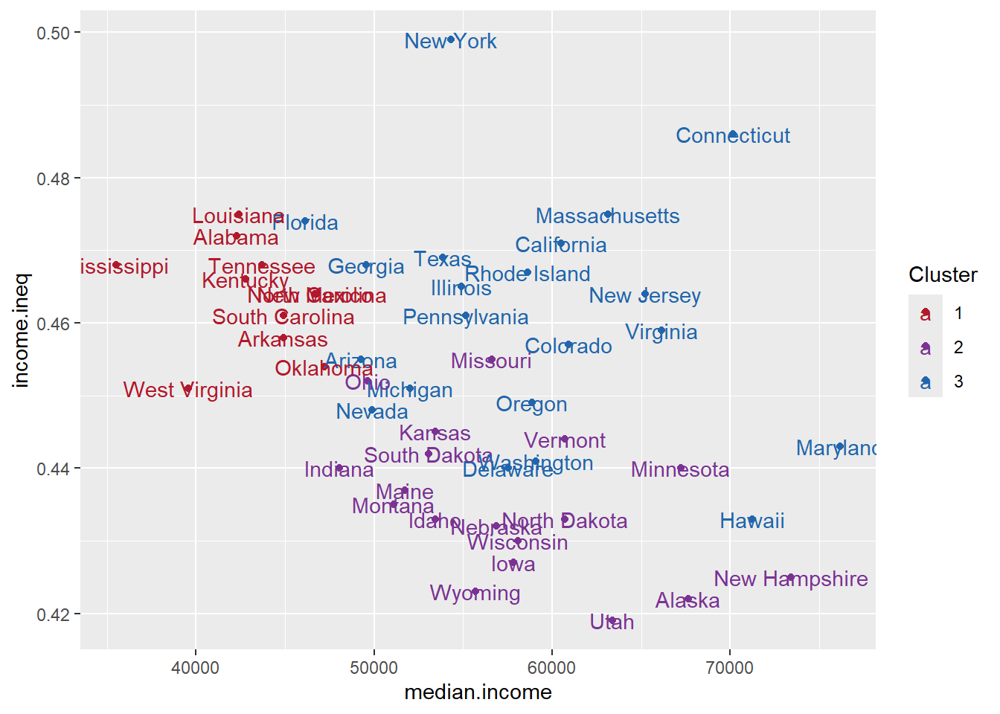
Missouri looks like it should be in the red cluster (for example), but remember, this is only one possible 2D snapshot of the eight-dimensional space. If we look at a different one, it looks more purple:
election2016 |>
ggplot(aes(x=median.income,y=non.citizen,label=state,color=as.factor(Cluster3)))+
geom_point()+
geom_text()+
scale_color_manual(name="Cluster",values=c( "#B2182B", "#7B3294", "#2166AC"))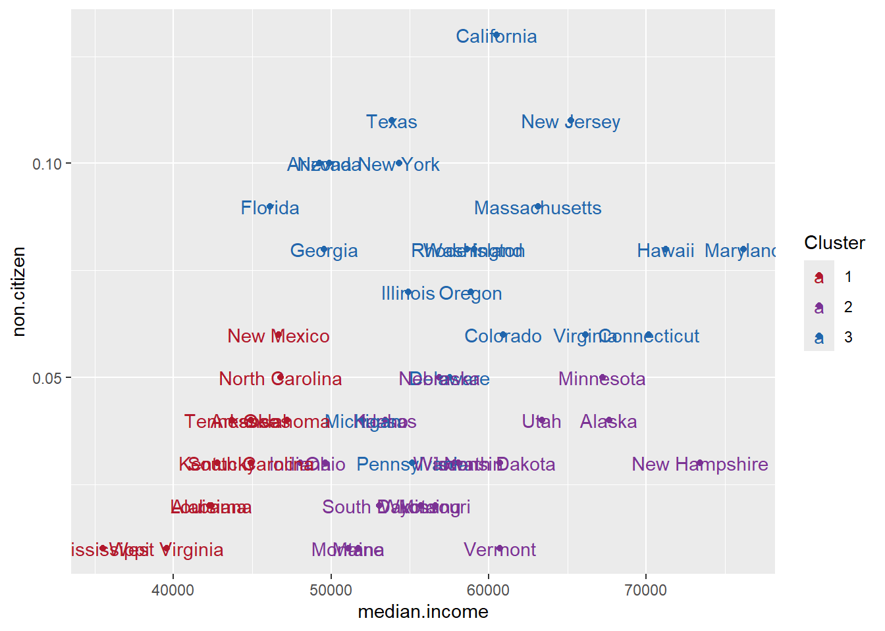
However, its worth noting that all of the cluster assignments are the same (after relabeling), whether we use the full dataset or just the first two components!
table(electionPC$Cluster3,election2016$Cluster3)
1 2 3
1 0 18 0
2 0 0 21
3 11 0 0So if clustering alone is your goal, performing PCA as a preliminary step can be valuable.
To come next time…
Hierarchical clustering where we don’t need to be arbitrary about the number of clusters or worry about the initial random assignments, but then we have to worry about where to cut the tree. There’s always something (eyeroll emoji).
Before closing out these notes though, I would like to mention one additional issue with K-means: its sensitivity to outliers. If you have three nice clusters and we add a new point that is completely separate from all three, then one of the cluster centers may shift drastically to accommodate the new point (recall that means are always sensitive to outliers5.) Hierarchical clustering doesn’t have this problem so much so can be preferrable in such scenarios.
Practice
The iris dataset, introduced by Sir Ronald Fisher6 in his 1936 paper “The use of multiple measurements in taxonomic problems”, is built into R. It contains information on three plant species (setosa, virginica, versicolor) and four descriptive measurements for each sample (Sepal/Petal, Length/Width). All measurements are given in cm.
- Perform k-means clustering on the Sepal/Petal Length/Width using k = 3 clusters.
- Look at one visualization of the cluster centers (either bar, profile or heat). Discuss what types of flowers are in each.
- Compare the clusters with the actual species. How well do they match?
Footnotes
There are two related algorithms of clustering called Partitioning Around Medoids (PAM) and Clustering LARge Applications (CLARA). Both are implemented in the
clusterpackage if you want to experiment with differences.↩︎Best meaning smallest within cluster sum of squared errors.↩︎
This is called the “elbow method” for choosing K↩︎
As an alternative, the factoextra package has a visualization tool called fviz_cluster which will plot the clustered points based on the first two principal components. This is different than what we did above where we calculated the clusters based off the first two PCs because it will cluster based on all eight but plot in the first two PCs. We’ll cover this package in the Module 5 R tools section.↩︎
Stats joke: Two statisticians are having a drink at a bar when Elon Musk walks in. One nudges the other and says, “On average, everyone here just got way richer!” They laugh—until they remember they lost their jobs because of DOGE and fall into despair.↩︎
AKA the Eugenicist asshole.↩︎